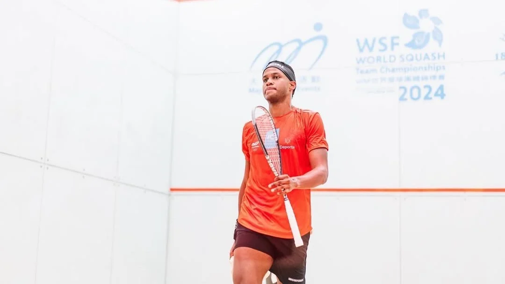

IND.
IND.Individual masculino
Ronald
Palomino
CampeónFinal por retiro de Leonel Cárdenas.
Campeón panamericano
Rumbo a Los Ángeles 2028.
Aspiración olímpica, no clasificación.
Jugador colombiano de squash profesional.
Oro en dobles masculinos de squash en los XIX Juegos Panamericanos Santiago 2023, junto a Juan Camilo Vargas.
Del podio continental al circuito profesional
Ver agenda
CAMPEÓN PANAMERICANORío de Janeiro / Panamericano de Mayores 2025
IND.Individual masculino
Final por retiro de Leonel Cárdenas.
Dobles masculinos
Dos nombres en la misma ficha.
Final de dobles masculinos
Colombia 2–1 México
Río de Janeiro · 2025
Campeón: Ronald Palomino.
La final terminó por retiro de Leonel Cárdenas.
Campeones: Ronald Palomino y Juan Camilo Vargas.
Rosario · 2026
En Rosario 2026, Palomino volvió al podio en dos pruebas: bronce individual y bronce en dobles mixtos con Lucía Bautista Sarmiento. Ver Río y Rosario en la agenda.
Fuentes de resultados: Panam Sports · SantiagoCOC · Río individualCOC · Río doblesCOC · Rosario
Corte de la agenda: .
Próximos torneos: sin participaciones individuales confirmadas al corte.
Disputado
Oro en dobles con Juan Camilo Vargas (H01) y oro por equipos (H02).
Disputado
Campeón en ambas modalidades (H03); dobles con Juan Vargas.
Disputado
Oro con Lucía Bautista Sarmiento (H04).
PanAm Squash · resultado · PanAm Squash · fechas del campeonato
Disputado
Bronce individual y bronce con Lucía Bautista (H05).
Disputado
FollowSquash (secundaria) documenta que Andrés Herrera avanzó frente a Palomino en segunda ronda. No se usa el parcial ni se infiere motivo de cierre del partido.
FollowSquash · resultado (fuente secundaria) · Organizador · sede y fechas
Colaboración
Diseñar con el cuerpo técnico un bloque para el individual y las transiciones a dobles, con evaluación al inicio y al cierre. La duración, el costo y los indicadores que se puedan compartir quedan por acordar.
Siguiente paso: revisar el plan de preparación por modalidad con el cuerpo técnico y acordar su prioridad. No hay un canal comercial autorizado.